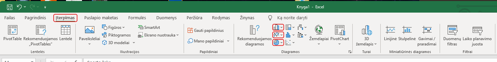
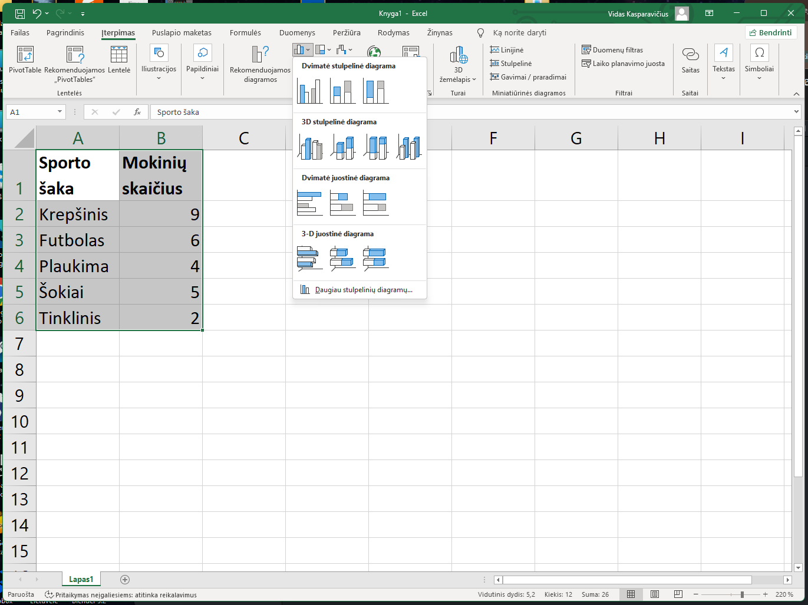
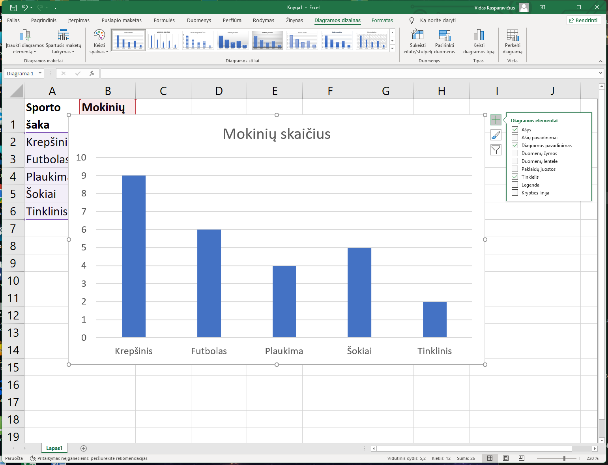
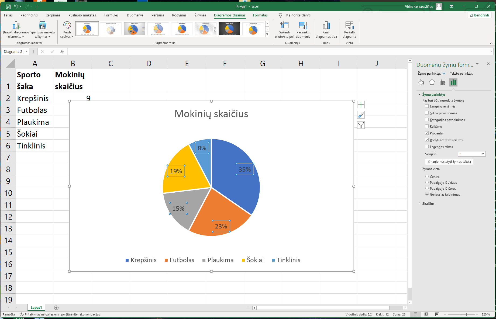
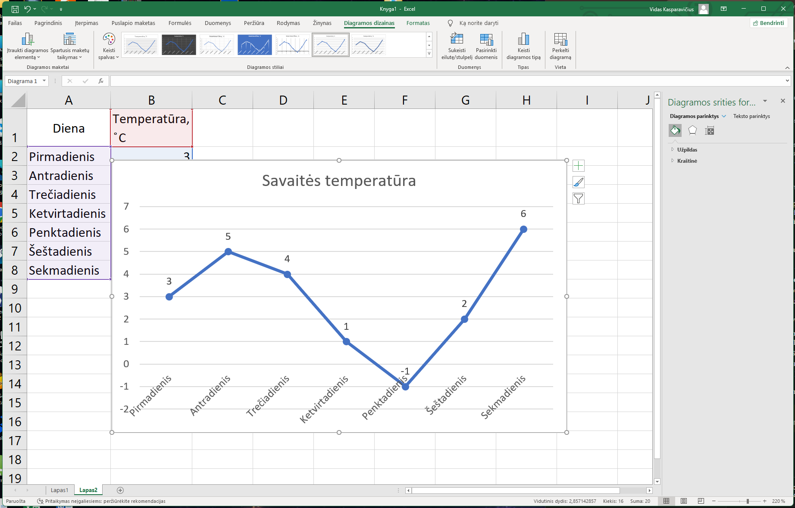

Po šios pamokos mokėsi:
- pažymėti duomenis ir įterpti diagramą;
- sukurti stulpelinę, skritulinę ir linijinę diagramą;
- pridėti pavadinimą, duomenų žymas ir ašių pavadinimus;
- nuspręsti, kuri diagrama tinka tavo duomenims.
1. Kas yra diagrama?
Diagrama – tai duomenų paveikslas. Ji parodo tą patį, ką ir lentelė, tik taip, kad atsakymą pamatai nespėjęs perskaityti nė vieno skaičiaus: kas didžiausias, kas mažiausias, kas auga, o kas mažėja.
Dažniausiai naudojamos trys diagramų rūšys. Pažiūrėk, kaip jos atrodo:
Stulpelinė
Lygina dydžius: kuris stulpelis aukštesnis, to ir daugiau.
Skritulinė
- Krepšinis
- Futbolas
- Plaukimas
- Šokiai
- Tinklinis
Rodo, kokią visumos dalį sudaro kiekviena grupė.
Linijinė
Rodo, kaip kas nors keičiasi laikui bėgant.
2. Pasiruošk duomenis
Diagrama visada kuriama iš lentelės. 7a klasės mokinių paklausė, kokią sporto šaką jie mėgsta labiausiai. Atidaryk „Excel“ ir surašyk rezultatus tiksliai taip:
| A | B | |
|---|---|---|
| 1 | Sporto šaka | Mokinių skaičius |
| 2 | Krepšinis | 9 |
| 3 | Futbolas | 6 |
| 4 | Plaukimas | 4 |
| 5 | Šokiai | 5 |
| 6 | Tinklinis | 2 |
Gera lentelė – gera diagrama
Pirmoje eilutėje turi būti antraštės, kairiajame stulpelyje – pavadinimai, dešiniajame – skaičiai. Nepalik tuščių eilučių ir nerašyk prie skaičių žodžių (ne „9 mokiniai“, o tiesiog „9“).
3. Pirmoji diagrama – stulpelinė
- Pažymėk visą lentelę kartu su antraštėmis: spustelėk langelį A1 ir nuspaudęs pelės klavišą tempk iki B6.
- Atidaryk skirtuką Įterpimas (angl. Insert).
- Grupėje Diagramos (Charts) spustelėk stulpelių piktogramą – Įterpti stulpelinę arba juostinę diagramą.

Skirtukas „Įterpimas“, grupė „Diagramos“. Apibraukti trys mygtukai iš viršaus į apačią: stulpelinė, linijinė ir skritulinė diagrama. - Skiltyje Dvimatė stulpelinė diagrama pasirink pirmąjį variantą.
Lape atsiras diagrama. Ją gali tempti už krašto į kitą vietą, o už kampų – didinti arba mažinti.

Greitasis būdas
Pažymėk lentelę ir paspausk Alt + F1 – „Excel“ iš karto įterps stulpelinę diagramą.
Diagrama pati atsinaujina
Pakeisk langelyje B6 skaičių 2 į 8 ir stebėk tinklinio stulpelį. Diagrama susieta su lentele, todėl jos nereikia kurti iš naujo. Paskui grąžink 2.
4. Sutvarkyk diagramą
Diagrama be pavadinimo – kaip paveikslas be parašo: neaišku, ką ji rodo. Spustelėk diagramą ir šalia jos dešinėje pamatysi mygtuką + – Diagramos elementai (Chart Elements). Čia varnelėmis įjungiamos ir išjungiamos diagramos dalys.
| Dalis | Ką ji rodo | Kaip pakeisti |
|---|---|---|
| Diagramos pavadinimas (Chart Title) | Apie ką ši diagrama | Spustelėk pavadinimą du kartus ir įrašyk savo, pvz., „Mėgstamiausia 7a klasės sporto šaka“ |
| Duomenų žymos (Data Labels) | Tikslų skaičių virš kiekvieno stulpelio | Uždėk varnelę meniu + |
| Ašių pavadinimai (Axis Titles) | Kas atidėta horizontaliai ir vertikaliai | Uždėk varnelę ir įrašyk „Sporto šaka“ bei „Mokinių skaičius“ |
| Legenda (Legend) | Ką reiškia kiekviena spalva | Kai duomenų eilutė viena, legendos nereikia – varnelę nuimk |

Spalvos ir stilius
Kol diagrama pažymėta, viršuje matai papildomą skirtuką Diagramos dizainas (Chart Design). Jame gali išsirinkti paruoštą stilių, mygtuku Keisti spalvas pakeisti spalvų rinkinį, o mygtuku Keisti diagramos tipą (Change Chart Type) – paversti diagramą kitos rūšies diagrama.
5. Skritulinė diagrama
Skritulinė diagrama atsako į klausimą „kokia dalis?“. Visas skritulys – tai visa klasė (26 mokiniai), o kiekviena išpjova – viena sporto šaka.
- Vėl pažymėk langelius A1:B6.
- Įterpimas → skritulio piktograma (apatinis apibrauktas mygtukas) Įterpti skritulinę arba žiedinę diagramą → Skritulinė (Pie).
- Meniu + įjunk Duomenų žymos.
- Kad vietoj skaičių matytum procentus: spustelėk rodyklę šalia Duomenų žymos → Daugiau parinkčių. Dešinėje atsidariusiame lange pažymėk Procentai, o varnelę prie Reikšmė nuimk.

Kada skritulinė netinka
Skritulinė diagrama tinka tik tada, kai dalys sudaro vieną visumą ir jų nedaug (iki 5–6). Savaitės temperatūrų ar mokinių ūgių į skritulį dėti negalima – jų suma nieko nereiškia.
6. Linijinė diagrama
Linijinė diagrama rodo kitimą laike: temperatūrą per savaitę, tavo ūgį per kelerius metus, žingsnių skaičių kasdien. Naujame lape (apačioje spustelėk +) surašyk savaitės vidurdienio temperatūras:
| A | B | |
|---|---|---|
| 1 | Diena | Temperatūra, °C |
| 2 | Pirmadienis | 3 |
| 3 | Antradienis | 5 |
| 4 | Trečiadienis | 4 |
| 5 | Ketvirtadienis | 1 |
| 6 | Penktadienis | -1 |
| 7 | Šeštadienis | 2 |
| 8 | Sekmadienis | 6 |
Prisimink automatinį užpildymą
Įrašyk tik „Pirmadienis“, tada tempk langelio kampe esantį kvadratėlį žemyn – „Excel“ kitas dienas surašys pats.
- Pažymėk A1:B8.
- Įterpimas → linijos piktograma (vidurinis apibrauktas mygtukas) Įterpti linijinę arba plokštuminę diagramą → Linijinė su žymekliais (Line with Markers).
- Pakeisk pavadinimą į „Savaitės temperatūra“ ir įjunk duomenų žymas.
Pažiūrėk į liniją: iš karto matyti, kad šalčiausia buvo penktadienį, o savaitgalį atšilo. Lentelėje to taip greitai nepastebėtum.

7. Kurią diagramą pasirinkti?
| Jei nori parodyti… | Rinkis | Pavyzdys |
|---|---|---|
| kas didesnis, kas mažesnis | Stulpelinę | Kiek knygų perskaitė kiekvienas draugas |
| kokią visumos dalį sudaro kiekviena grupė | Skritulinę | Kaip klasė balsavo dėl ekskursijos vietos |
| kaip kas nors keitėsi laikui bėgant | Linijinę | Tavo matematikos pažymių vidurkis kiekvieną mėnesį |
Dažniausios klaidos
- Pažymėta ne viskas. Jei nepažymėsi antraščių ar pavadinimų stulpelio, diagramoje vietoj sporto šakų matysi 1, 2, 3…
- Pažymėta per daug. Eilutės „Iš viso“ į diagramą neįtrauk – ji bus už visus didesnė ir sugadins vaizdą.
- Nėra pavadinimo. „Diagramos pavadinimas“ – tai ne pavadinimas, o vieta jam įrašyti.
- Ne ta rūšis. Jei abejoji, rinkis stulpelinę – ji tinka beveik visada.
8. Užduotys
1 užduotis. Klasės augintiniai
Sukurk lentelę ir stulpelinę diagramą. Pridėk pavadinimą, duomenų žymas ir abiejų ašių pavadinimus, o legendą išjunk.
| Augintinis | Mokinių skaičius |
|---|---|
| Šuo | 8 |
| Katė | 10 |
| Žuvytės | 3 |
| Žiurkėnas | 2 |
| Neturi | 5 |
2 užduotis. Kam išleidžiu kišenpinigius
Sukurk skritulinę diagramą su procentais. Kuriai sričiai tenka didžiausia dalis? Langelyje po lentele funkcija =SUM(…) apskaičiuok, kiek eurų išleista iš viso (į diagramą šio langelio neįtrauk).
| Išlaidos | Suma, € |
|---|---|
| Užkandžiai | 8 |
| Žaidimai | 6 |
| Taupymas | 4 |
| Kita | 2 |
3 užduotis. Mano savaitė
Sugalvok ir surašyk savo duomenis: kiek minučių kiekvieną savaitės dieną praleidai prie telefono (arba sportavai, skaitei). Sukurk linijinę diagramą. Po lentele funkcijomis =AVERAGE(…), =MAX(…) ir =MIN(…) rask vidurkį, didžiausią ir mažiausią reikšmę. Ar jos sutampa su tuo, ką matai diagramoje?
9. Pasitikrink
Spustelėk, tavo manymu, teisingą atsakymą.